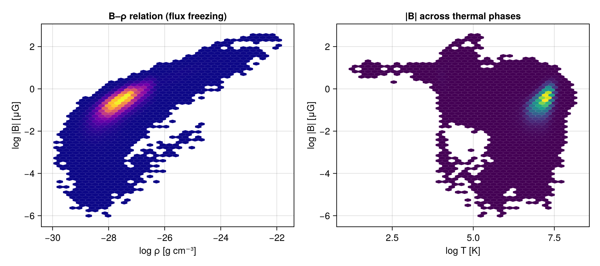
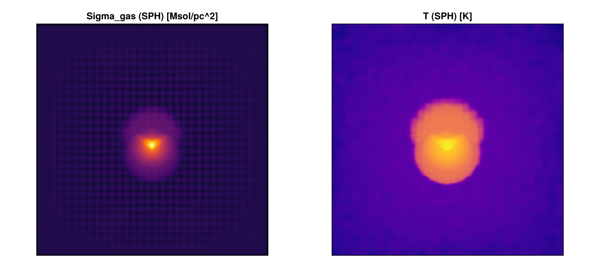
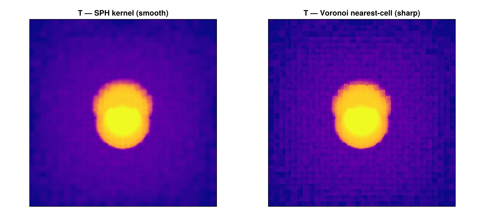
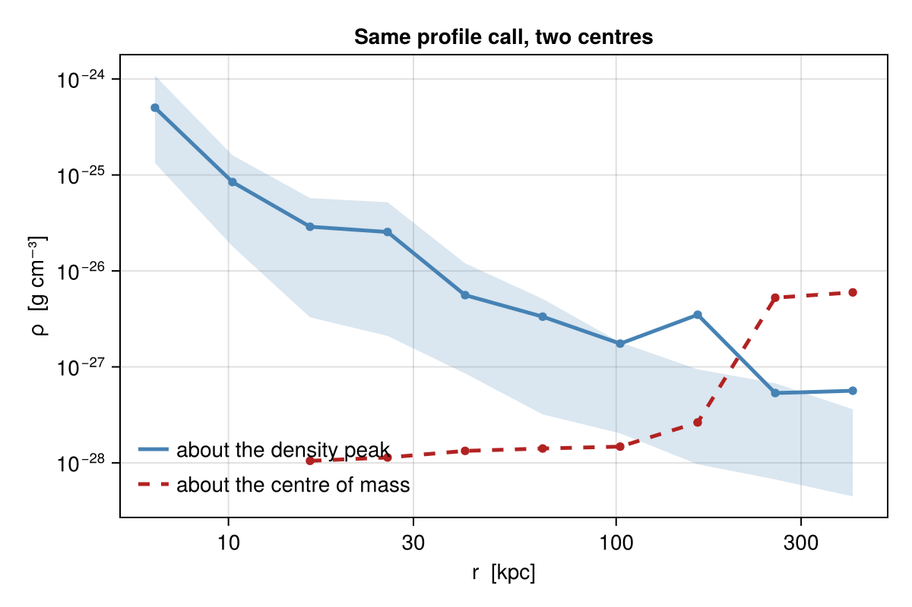

Other Simulation Codes — Worked Examples
This page is also an executable Jupyter notebook — open / download multicode_examples.ipynb. The notebooks run end-to-end and double as part of Mera's test suite.
This page loads PLUTO / Chombo / Athena++ / FLASH / GADGET and the AREPO/IllustrisTNG gas workflow end-to-end — real snapshots, real outputs. See Multi-code support for the overview and the per-code reader pages.
Mera began as a RAMSES tool, but its analysis layer is code-blind — it works on a generic uniform/AMR cell list (or particle list), not on RAMSES file formats. So the same calls (getvar, projection, subregion, timeseries, savedata, …) run on data from several codes:
| Code | grid / particles | what this notebook shows |
|---|---|---|
| PLUTO (uniform + Chombo-AMR) | grid | load, getvar |
| Athena++ | AMR grid + MHD | MHD field, load-time sub-region |
| FLASH | AMR grid | a self-gravity potential field |
| GADGET (+ GIZMO/AREPO/SWIFT/TNG) | particles + gas cells | getparticles, gas ρ/T/Z, SPH maps |
It also covers self-gravity, chemistry and radiative-transfer fields, and converting any code to a Mera file. See the Multi-code support docs for the full reference.
The test snapshots live under
MERA_EXAMPLES(download the synthetic/sample data, or point the path at your own runs).
# Example-data root. Point this at your own simulation folder, or set the
# MERA_EXAMPLES environment variable; every path below is built from it.
MERA_EXAMPLES = get(ENV, "MERA_EXAMPLES", "/Volumes/FASTStorage/Simulations/Mera-Tests");
using Mera*__ __ _______ ______ _______
| |_| | | _ | | _ |
| | ___| | || | |_| |
| | |___| |_||_| |
| | ___| __ | |
| ||_|| | |___| | | | _ |
|_| |_|_______|___| |_|__| |__|
Mera v1.8.0"/Volumes/FASTStorage/Simulations/Mera-Tests"PLUTO (uniform grid)
getinfo auto-detects the code from the directory's signature files and prints the same overview a RAMSES snapshot would; gethydro then returns an ordinary HydroDataType.
info = getinfo(5, joinpath(MERA_EXAMPLES, "PLUTO/pluto_sedov3d")) # auto-detects PLUTO
gas = gethydro(info, verbose=false)
maximum(getvar(gas, :rho)) # the usual analysis, unchanged[Mera]: 2026-07-31T14:30:59.279
Code: PLUTO
output: 5 time: 0.5 [code units]
grid: 64³ uniform Cartesian, level 6, boxlen = 1.0
variables: (rho, vx, vy, vz, p)
-------------------------------------------------------4.040484204505616Chombo (PLUTO-AMR)
PLUTO's AMR output (the Chombo HDF5 format) loads as a Mera AMR object with a :level column.
gc = gethydro(getinfo(0, joinpath(MERA_EXAMPLES, "CHOMBO/chombo_3d/IsothermalSphere"), verbose=false), verbose=false)
sort(unique(getvar(gc, :level))) # the refinement levels present2-element Vector{Float64}:
6.0
7.0Athena++ (AMR MHD) + a load-time sub-region
Athena++ .athdf snapshots carry cell-centred MHD, so :bx/:by/:bz and derived :bmag work. The spatial-window arguments load only part of the box (reading only the intersecting MeshBlocks).
ia = getinfo(5, joinpath(MERA_EXAMPLES, "ATHENA/athena_blast")) # a self-built 3-D MHD blast
ga = gethydro(ia, verbose=false)
@show maximum(getvar(ga, :bmag)); # magnetic field strength
# central 20% box — only the intersecting blocks are read
gsub = gethydro(ia; xrange=[-0.1,0.1], yrange=[-0.1,0.1], zrange=[-0.1,0.1],
center=[:bc], range_unit=:standard, verbose=false)
length(gsub.data), length(ga.data) # sub-region ≪ full snapshot[Mera]: 2026-07-31T14:31:11.610
Code: Athena++
output: 5 time: 0.50111 [code units]
root grid: 32³ (level 5), MaxLevel 2 ⇒ levels 5:7, boxlen = 2.0
MeshBlocks: 148 variables: (rho, p, vx, vy, vz, bx, by, bz)
-------------------------------------------------------
maximum(getvar(ga, :bmag)) = 1.1211309571451635(17576, 606208)FLASH
FLASH plot files load as AMR hydro/MHD; a self-gravity potential (if present) appears as :gpot.
gf = gethydro(getinfo(150, joinpath(MERA_EXAMPLES, "FLASH/flash_gassloshing/GasSloshing"), verbose=false), verbose=false)
:gpot in gf.info.variable_listtrueGADGET / GIZMO / AREPO / SWIFT / IllustrisTNG (particles)
GADGET HDF5 is particle-based, so it loads through getparticles into a PartDataType. :family is the particle type (0 gas, 1 DM, 2 disk, 3 bulge, 4 stars, 5 BH); families= selects a subset.
ig = getinfo(200, joinpath(MERA_EXAMPLES, "GADGET/gadget_diskgalaxy/GadgetDiskGalaxy"))
stars = getparticles_gadget(ig; families=[4]) # just the star particles
length(stars.data), msum(stars) > 0[Mera]: 2026-07-31T14:31:35.870
Code: GADGET
output: 200 time: 0.34483 redshift: 1.9
boxlen = 64000.0
particles: 4334546 gas, 4786616 halo/DM, 2333848 disk, 450921 stars, 1149 bndry/BH (total 11907080)
-------------------------------------------------------
[Mera]: GADGET
particles = 450921, families 4 (x,y,z,vx,vy,vz,mass,id,family)(450921, true)AREPO / IllustrisTNG — gas-cell physics
For gas (PartType0) the Voronoi-cell fields are read too, so the full thermodynamic analysis runs in physical units (comoving→physical a/h is applied automatically for cosmological runs). Below: a real IllustrisTNG halo cutout.
it = getinfo(59, joinpath(MERA_EXAMPLES, "AREPO/TNGHalo/TNGHalo/halo_59.hdf5")) # IllustrisTNG (AREPO)
gas = getparticles_gadget(it; families=[0]) # PartType0 gas → :rho,:u,:ne,:metallicity,:sfr,:volume + :T
println("gas cells : ", length(gas.data))
println("rho [g/cm³] : ", extrema(getvar(gas, :rho, :g_cm3)))
println("T [K] : ", extrema(getvar(gas, :T, :K)))
println("metallicity : ", extrema(getvar(gas, :metallicity)))[Mera]: 2026-07-31T14:31:39.439
Code: AREPO
output: 59 time: 1.0 redshift: 0.0
boxlen = 205000.0
particles: 4006794 gas, 5567314 halo/DM, 533034 stars (total 10107142)
-------------------------------------------------------
[Mera]: AREPO
gas cells = 4006794, families 0 (x,y,z,vx,vy,vz,mass,id,family,rho,u,ne,metallicity,sfr,nh,mach,gpot,bx,by,bz,volume)
gas cells : 4006794
rho [g/cm³] :
(1.3854807197342735e-30, 1.17827292777639e-22)
T [K] :
(17.965557996942838, 1.2925814640761332e8)
metallicity : (8.100937520794105e-8, 0.04447760060429573)# the usual reductions run unchanged on AREPO gas, in physical units
n = length(gas.data)
println("median T [K] : ", sort(getvar(gas, :T, :K))[n ÷ 2])
println("median Z : ", sort(getvar(gas, :metallicity))[n ÷ 2])
println("gas mass [Msol]: ", msum(gas, :Msol))median T [K] : 1.436872560859919e7
median Z :
0.001993876649066806
gas mass [Msol]: 4.6930995577059625e13Magnetic fields (MHD)
IllustrisTNG is a magneto-hydrodynamic run, so its gas carries a MagneticField. Mera reads it into :bx/:by/:bz (physical Gauss; comoving→physical a⁻² applied), and getvar derives the usual magnetic quantities — :bmag (|B|), :pmag (B²/2), plasma :beta, Alfvén speed :v_alfven, and the magnetosonic Mach numbers — exactly as for a native RAMSES-MHD run (and they project into maps like any other field). Below: the B–ρ relation (flux freezing, |B| rising with density) and how the field strength varies across thermal phases, on the real TNG halo gas.
# the magnetic field is read in physical units; getvar derives |B|, β, v_A, … on the gas
nB = length(gas.data)
println("|B| [μG] : ", round.(extrema(getvar(gas, :bmag, :muG)), sigdigits=3))
println("median |B| [μG] : ", round(sort(getvar(gas, :bmag, :muG))[nB ÷ 2], sigdigits=3))
println("plasma β : median ", round(sort(getvar(gas, :beta))[nB ÷ 2], sigdigits=3), " (≫1 ⇒ thermal-dominated)")
println("v_Alfvén [km/s] : median ", round(sort(getvar(gas, :v_alfven, :km_s))[nB ÷ 2], sigdigits=3))|B| [μG] : (9.88e-7, 357.0)
median |B| [μG] : 0.243
plasma β : median
201.0 (≫1 ⇒ thermal-dominated)
v_Alfvén [km/s] : median 43.0using CairoMakie, Statistics
ρ = getvar(gas, :rho, :g_cm3); Bμ = getvar(gas, :bmag, :muG); T = getvar(gas, :T, :K)
ok = (ρ .> 0) .& (Bμ .> 0) .& (T .> 0)
figB = Figure(size=(900, 400))
a1 = Axis(figB[1,1]; title="B–ρ relation (flux freezing)", xlabel="log ρ [g cm⁻³]", ylabel="log |B| [μG]")
hexbin!(a1, log10.(ρ[ok]), log10.(Bμ[ok]); bins=70, colormap=:plasma)
a2 = Axis(figB[1,2]; title="|B| across thermal phases", xlabel="log T [K]", ylabel="log |B| [μG]")
hexbin!(a2, log10.(T[ok]), log10.(Bμ[ok]); bins=70, colormap=:viridis)
figB
Box-filling maps — a full AREPO volume
The TNGHalo above is a halo cutout, so its gas is centrally concentrated. For maps that fill the frame, here is ArepoBullet — a full AREPO cluster-merger box (non-cosmological) whose gas fills the whole volume. Surface density and mass-weighted temperature (SPH kernel).
using CairoMakie, Statistics
ib = getinfo(150, joinpath(MERA_EXAMPLES, "AREPO/ArepoBullet/ArepoBullet/snapshot_150.hdf5")) # AREPO cluster-merger box
bgas = getparticles_gadget(ib; families=[0])
sd = projection(bgas, :sd, :Msol_pc2, res=256, center=[:bc], weighting=:sph) # fills the frame
Tm = projection(bgas, :T, res=256, center=[:bc], weighting=:sph)
fig = Figure(size=(900, 400))
a1 = Axis(fig[1,1]; title="Sigma_gas (SPH) [Msol/pc^2]", aspect=DataAspect()); hidedecorations!(a1)
a2 = Axis(fig[1,2]; title="T (SPH) [K]", aspect=DataAspect()); hidedecorations!(a2)
heatmap!(a1, log10.(ifelse.(sd.maps[:sd] .> 0, sd.maps[:sd], NaN))'; colormap=:inferno)
heatmap!(a2, log10.(ifelse.(Tm.maps[:T] .> 0, Tm.maps[:T], NaN))'; colormap=:plasma)
fig[Mera]: 2026-07-31T14:31:58.940
Code: AREPO
output: 150 time: 1.5381 redshift: 0.0
boxlen = 40000.0
particles: 12865831 gas, 13368238 halo/DM, 295531 stars (total 26529600)
-------------------------------------------------------
[Mera]: AREPO
gas cells = 12865831, families 0 (x,y,z,vx,vy,vz,mass,id,family,rho,u,gpot,volume)
[Mera]: 2026-07-31T14:32:03.127
center: [0.5, 0.5, 0.5] ==> [19.999 [Mpc] :: 19.999 [Mpc] :: 19.999 [Mpc]]
domain:
xmin::xmax: 0.0 :: 1.0 ==> 0.0 [Mpc] :: 39.999 [Mpc]
ymin::ymax: 0.0 :: 1.0 ==> 0.0 [Mpc] :: 39.999 [Mpc]
zmin::zmax: 0.0 :: 1.0 ==> 0.0 [Mpc] :: 39.999 [Mpc]
Effective resolution: 256^2
Pixel size: 156.246 [kpc]
Simulation min.: 19.999 [Mpc]
[Mera]: 2026-07-31T14:32:50.124
center: [0.5, 0.5, 0.5] ==> [19.999 [Mpc] :: 19.999 [Mpc] :: 19.999 [Mpc]]
domain:
xmin::xmax: 0.0 :: 1.0 ==> 0.0 [Mpc] :: 39.999 [Mpc]
ymin::ymax: 0.0 :: 1.0 ==> 0.0 [Mpc] :: 39.999 [Mpc]
zmin::zmax: 0.0 :: 1.0 ==> 0.0 [Mpc] :: 39.999 [Mpc]
Effective resolution: 256^2
Pixel size: 156.246 [kpc]
Simulation min.: 19.999 [Mpc]
SPH vs Voronoi on the same box-filling run: weighting=:sph (smooth, isotropic kernel — the conserving default) vs weighting=:voronoi (nearest-generator — sharp, showing the moving-mesh cells).
Ts = projection(bgas, :T; res=256, center=[:bc], weighting=:sph, verbose=false, show_progress=false)
Tv = projection(bgas, :T; res=256, center=[:bc], weighting=:voronoi, verbose=false, show_progress=false)
cr = Tuple(quantile(log10.(filter(>(0), Ts.maps[:T])), [0.02, 0.98])) # shared colour scale
fig2 = Figure(size=(900, 400))
b1 = Axis(fig2[1,1]; title="T — SPH kernel (smooth)", aspect=DataAspect()); hidedecorations!(b1)
b2 = Axis(fig2[1,2]; title="T — Voronoi nearest-cell (sharp)", aspect=DataAspect()); hidedecorations!(b2)
heatmap!(b1, log10.(ifelse.(Ts.maps[:T] .> 0, Ts.maps[:T], NaN))'; colormap=:plasma, colorrange=cr)
heatmap!(b2, log10.(ifelse.(Tv.maps[:T] .> 0, Tv.maps[:T], NaN))'; colormap=:plasma, colorrange=cr)
fig2
Multi-file snapshots, column selection, and the Voronoi tessellation
Production AREPO runs split one snapshot across many files (snapdir_NNN/snap_NNN.0.hdf5 …). Mera resolves the set and streams it chunk by chunk — nothing extra to pass. Two properties of real chunked data matter, and neither can be reproduced by a single-file sample:
- a particle type may be absent from chunk 0, so field discovery scans forward for a chunk that carries it (the same thing
illustris_pythondoes); - particle counts above 2³² are split across
NumPart_TotalandNumPart_Total_HighWord.
Below, a 16-chunk CAMELS zoom at z = 4. It also shows vars= — which limits which gas columns are read, usually the dominant memory cost — and the invariant that makes a moving mesh different from an AMR grid: the Voronoi cells tile space exactly, so their volumes sum to the box volume.
capath = joinpath(MERA_EXAMPLES, "AREPO/camels_GZ28_499/snapdir_024")
if isdir(capath)
ci = getinfo(24, capath) # 16 chunks, resolved automatically
println("chunks found : ", length(Mera._gadget_files(24, capath)))
println("z = ", round(1/ci.aexp - 1, digits=3), " h = ", round(ci.H0/100, digits=4))
# `vars=` selects which STORED gas columns are read; the 9 base columns always load
win = (families=[0], xrange=[0.48,0.52], yrange=[0.48,0.52], zrange=[0.48,0.52],
center=[0.,0.,0.], range_unit=:standard)
gall = getparticles(ci; win..., verbose=false)
gsel = getparticles(ci; win..., vars=[:rho, :u, :ne], verbose=false)
for (lbl, g) in (("vars=:all", gall), ("vars=[:rho,:u,:ne]", gsel))
println(rpad(lbl, 20), length(g.selected_partvars), " columns ",
round(Base.summarysize(g.data)/2^20, digits=1), " MB")
end
# a type ABSENT from chunk 0 still loads with its full count (stars here)
st = getparticles(ci; families=[4], verbose=false)
println("stars (absent from chunk 0): ", length(st.data), " particles")
# the Voronoi tessellation TILES SPACE — the moving-mesh analogue of the AMR volume check.
# This needs every cell, so free it again straight away.
gfull = getparticles(ci; families=[0], vars=[:rho], verbose=false)
println("gas cells : ", length(gfull.data))
println("Σ V / boxlen³ = ", round(sum(getvar(gfull, :volume))/ci.boxlen^3, digits=8))
gfull = nothing; GC.gc()
# density-threshold clump finding works on AREPO gas (:rho is a real stored column)
thr = quantile(getvar(gsel, :rho), 0.995)
cat = clumpfind(gsel, :rho; threshold=thr, linking_length=2.0, pos_unit=:kpc)
println("clumps above the 99.5th density percentile: ", length(cat))
else
println("CAMELS fixture not present — skipping (see docs/src/gadget_reader.md)")
end[Mera]: 2026-07-31T14:35:24.295
Code: AREPO
output: 24 time: 0.20016 redshift: 3.996
boxlen = 200000.0
snapshot chunks: 16
particles: 17755754 gas, 692224 halo/DM, 17052784 disk, 17745008 bulge, 136 stars, 5 bndry/BH (total 53245911)
-------------------------------------------------------
chunks found : 16
z = 3.996 h = 0.5001
vars=:all
21 columns 120.2 MB
vars=[:rho,:u,:ne] 13 columns 72.5 MB
stars (absent from chunk 0):
136 particles
gas cells :
17755754
Σ V / boxlen³ = 1.0
clumps above the 99.5th density percentile: 1416Stellar ages — step by step
TNG records when a star formed as GFM_StellarFormationTime, which is the scale factor a at formation, not a time. Mera exposes it as :aform — deliberately not as the RAMSES :birth, which is super-conformal time. They play the same role but are different quantities, so getvar(:birth) on AREPO data raises rather than silently reinterpreting the number.
From :aform two things follow directly:
| quantity | meaning |
|---|---|
getvar(stars, :aform) | the scale factor at formation (raw; negative marks a wind particle) |
getvar(stars, :zform) | formation redshift, 1/a − 1 |
getvar(stars, :age, :Gyr) | t(a_snap) − t(a_form) from the Friedmann table |
One caveat worth knowing before you plot anything. TNG flags wind particles with a_form < 0. getvar finishes with a global NaN→0 pass (it exists for r = 0 singularities), so those show up as age = 0 — which looks like "formed just now" and would distort a star-formation history. Always select real stars on the raw column first: getvar(stars, :aform) .> 0.
tngpath = joinpath(MERA_EXAMPLES, "AREPO/TNGHalo/TNGHalo/halo_59.hdf5")
if isfile(tngpath)
ti = getinfo(59, tngpath, verbose=false)
stars = getparticles(ti; families=[4], verbose=false)
# 1. the raw formation scale factor — and the wind marker
aform = getvar(stars, :aform)
real = aform .> 0 # wind particles have a_form < 0
println("stars ", length(aform), " wind ", count(!, real), " real ", count(real))
# 2. formation redshift and age follow from it
zform = getvar(stars, :zform)[real]
age = getvar(stars, :age, :Gyr)[real]
println("z_form : median ", round(median(zform), digits=2), " max ", round(maximum(zform), digits=2))
println("age : median ", round(median(age), digits=2), " Gyr oldest ", round(maximum(age), digits=2), " Gyr")
# 3. two independent checks that the conversion is right
println("z_form == 1/a - 1 : ", all(zform .≈ (1 ./ aform[real] .- 1)))
ord = sortperm(aform[real])
println("age decreases with a_form : ", issorted(age[ord], rev=true))
# 4. a star-formation history — the reason to want any of this
edges = 0:0.5:ceil(maximum(age))
mass = getvar(stars, :mass, :Msol)[real]
sfh = [sum(mass[(age .>= edges[k]) .& (age .< edges[k+1])]) for k in 1:length(edges)-1]
println("stellar mass formed in the last 1 Gyr: ", round(sum(sfh[1:2]), sigdigits=4), " Msol")
else
println("TNGHalo fixture not present — skipping")
endstars 533034
wind 96 real 532938
z_form : median
2.02 max 13.54
age : median 10.54 Gyr oldest 13.49 Gyr
z_form == 1/a - 1 : true
age decreases with a_form :
true
stellar mass formed in the last 1 Gyr: 2.431e10
MsolHalo membership — the group catalogue
Everything above selects gas by geometry. The IllustrisTNG workflow does it by membership: a cell belongs to a halo because SUBFIND says so, not because its centre falls inside a sphere. getgroups reads the FoF catalogue and halo= loads exactly one group's particles.
The check below is the strongest in this page — it recomputes the catalogue's published GroupMassType from the particles themselves, so it compares against numbers Mera had no part in producing. Two conventions have to be right for it to work: the per-group offsets (the running sum of GroupLenType, since the snapshot is ordered by group), and the fact that wind particles sit in PartType4 but count as gas (a_form < 0).
tngdir = joinpath(MERA_EXAMPLES, "AREPO/TNG50-4/snapdir_033")
if isdir(tngdir)
ti = getinfo(33, tngdir, verbose=false)
gc = getgroups(ti, verbose=false) # catalogue found beside the snapshot
println("code = ", ti.simcode, " FoF groups = ", gc.n)
h = ti.H0/100
k = (ti.constants.Msol / (1.989e43/1e10)) * h / 1e10 # Msol -> catalogue units
for gid in 0:2
dm = getparticles(ti; families=[1], vars=Symbol[], halo=gid, verbose=false)
g = getparticles(ti; families=[0], vars=Symbol[], halo=gid, verbose=false)
st = getparticles(ti; families=[4], vars=[:aform], halo=gid, verbose=false)
wind = getvar(st, :aform) .< 0 # wind lives in PartType4, counts as gas
mdm = msum(dm, :Msol)*k
mgas = (msum(g, :Msol) + sum(getvar(st,:mass,:Msol)[wind]))*k
mst = sum(getvar(st,:mass,:Msol)[.!wind])*k
println("halo ", gid,
" DM ", round(mdm /gc.GroupMassType[gid+1,2], digits=8),
" gas ", round(mgas/gc.GroupMassType[gid+1,1], digits=8),
" stars ", round(mst /gc.GroupMassType[gid+1,5], digits=8),
" (recomputed / published)")
end
else
println("TNG50-4 fixture not present — skipping")
endcode = AREPO
FoF groups = 31122
halo
0 DM 1.0 gas 1.00000004 stars 0.99999999 (recomputed / published)
halo
1 DM 0.99999997 gas 1.00000002 stars 1.00000004 (recomputed / published)
halo
2 DM 1.0 gas 0.99999997 stars 0.99999998 (recomputed / published)The rest of Mera on AREPO gas
Nothing above is special to the reader: once the gas is loaded, the general analysis functions work on it as they do on a RAMSES grid. What differs is the data model — Voronoi cells carry a stored :volume instead of a refinement level — and that shows up in two places worth knowing.
Regions can split cells. A Voronoi cell is a polyhedron the snapshot never gives us, so split=true approximates it by the sphere of equal volume and returns a per-cell :fraction. That matters here far more than on an AMR grid: cell sizes span a huge range, so a modest sphere can be cut by cells comparable to itself, and a plain in/out test on the cell centre becomes arbitrary.
Weighting is a real choice. With a volume in hand, ⟨T⟩ mass-weighted and volume-weighted are different physical questions — the first follows the dense gas, the second the diffuse.
capath = joinpath(MERA_EXAMPLES, "AREPO/camels_GZ28_499/snapdir_024")
if isdir(capath)
ci = getinfo(24, capath, verbose=false)
gas = getparticles(ci; families=[0], vars=[:rho, :u, :ne],
xrange=[0.45,0.55], yrange=[0.45,0.55], zrange=[0.45,0.55],
center=[0.,0.,0.], range_unit=:standard, verbose=false)
c = collect(center_of_mass(gas, :kpc))
println("cells ", length(gas.data), " centre of mass [kpc] ", round.(c, digits=1))
println("bulk velocity [km/s] ", round.(collect(bulk_velocity(gas, :km_s)), digits=2))
# --- regions: whole cells vs split cells -------------------------------------------
R = 300.0
# NB Mera.Sphere: CairoMakie (via GeometryBasics) also exports `Sphere`, so once both
# are loaded the bare name is ambiguous — qualify it.
whole = subregion(gas, Mera.Sphere(R; center=c, range_unit=:kpc), verbose=false)
split = subregion(gas, Mera.Sphere(R; center=c, range_unit=:kpc), split=true, verbose=false)
m_whole = msum(whole, :Msol)
m_split = sum(getvar(split, :mass, :Msol) .* getvar(split, :fraction))
println("sphere R=", R, " kpc: whole-cell ", round(m_whole, sigdigits=6),
" split ", round(m_split, sigdigits=6), " Msol")
shell = shellregion(gas, :sphere, radius=[R/2, R], center=c, range_unit=:kpc, verbose=false)
println("shell ", R/2, "–", R, " kpc: ", length(shell.data), " cells")
# --- value-space selection: pick gas by physics, not position -----------------------
hot = filterdata(gas, Above(:T, 1e5; unit=:K), verbose=false) # NB the unit: :T is code units
println("hot gas (T > 1e5 K): ", length(hot.data), " cells, ",
round(100*msum(hot,:Msol)/msum(gas,:Msol), digits=2), " % of the mass")
# --- weighting is a physical choice on Voronoi data ---------------------------------
T = getvar(gas, :T, :K); m = getvar(gas, :mass); V = getvar(gas, :volume)
println("⟨T⟩ mass-weighted ", round(sum(m.*T)/sum(m), sigdigits=4), " K")
println("⟨T⟩ volume-weighted ", round(sum(V.*T)/sum(V), sigdigits=4), " K")
# --- save / load round-trip ---------------------------------------------------------
tmp = mktempdir()
savedata(gas, tmp, :write, verbose=false)
back = loaddata(24, tmp, :particles, verbose=false)
println("save/load round-trip: ", length(back.data), " cells, mass preserved ",
isapprox(msum(back,:Msol), msum(gas,:Msol); rtol=1e-12))
else
println("CAMELS fixture not present — skipping")
endcells 984133
centre of mass [kpc] [40042.8, 39878.8, 39974.9]
bulk velocity [km/s] [172.21, -82.24, 32.44]
sphere R=300.0
kpc: whole-cell 1.39826e11 split 1.39571e11 Msol
shell 150.0
–300.0 kpc: 3392 cells
hot gas (T > 1e5 K): 13969
cells, 0.21 % of the mass
⟨T⟩ mass-weighted 14560.0 K
⟨T⟩ volume-weighted 11060.0 K
save/load round-trip: 984133
cells, mass preserved trueMasks, weighted statistics, and radial profiles
Three more general functions, and the one place each of them can mislead you on this data.
getmask selects without copying. filterdata returns a new Mera object — convenient, and a second copy of every column. getmask takes the same selector language and returns a plain BitVector, which getvar, projection, wstat and profile all accept as mask=. At a million cells that distinction is worth having; the check below confirms both routes select exactly the same cells.
wstat gives the whole distribution, not just a mean. Mean, median, standard deviation, skewness and kurtosis come out of a single weighted pass. Note it reproduces the hand-rolled sum(m.*T)/sum(m) from the cell above — and that mass- and volume-weighting still answer different questions.
profile is only as good as its centre. It bins any getvar quantity against any other, but on a zoom simulation the centre of mass of the loaded box is not the halo — here it sits 2.4 Mpc away, in the intergalactic medium. Profiled about the density peak the gas falls off over three decades; profiled about the centre of mass the inner bins are empty and the curve rises outward, which is a plot of the halo's surroundings rather than the halo. Both curves below come from the same profile call with one argument changed.
# --- getmask: the same selection as a BitVector, with no second copy of the data -------
hotmask = getmask(gas, Above(:T, 1e5; unit=:K))
println("getmask -> ", typeof(hotmask), " ", count(hotmask), " of ", length(hotmask), " cells")
println("same cells as filterdata: ", count(hotmask) == length(hot.data))
# --- wstat: mean, median, spread and shape in one weighted pass -----------------------
T = getvar(gas, :T, :K); m = getvar(gas, :mass, :Msol); V = getvar(gas, :volume)
sm = wstat(T, m) # mass-weighted
sv = wstat(T, V) # volume-weighted
sh = wstat(T, m, mask=hotmask) # mass-weighted, hot gas only
println("⟨T⟩ mass-wtd ", round(sm.mean, sigdigits=5), " K median ",
round(sm.median, sigdigits=5), " K std ", round(sm.std, sigdigits=5))
println("⟨T⟩ volume-wtd ", round(sv.mean, sigdigits=5), " K")
println("⟨T⟩ hot only ", round(sh.mean, sigdigits=5), " K")
# --- profile: the centre you choose decides the answer --------------------------------
rho = getvar(gas, :rho, :g_cm3); ix = argmax(rho)
peak = [getvar(gas,:x,:kpc)[ix], getvar(gas,:y,:kpc)[ix], getvar(gas,:z,:kpc)[ix]]
println("density peak [kpc] ", round.(peak, digits=1))
println("centre of mass [kpc] ", round.(c, digits=1), " → ",
round(sqrt(sum((peak .- c).^2)), digits=0), " kpc apart")
pk = profile(gas, :r_sphere, :rho; center=peak, center_unit=:kpc,
xunit=:kpc, unit=:g_cm3, xrange=[5.,500.], nbins=10, scale=:log)
cm = profile(gas, :r_sphere, :rho; center=c, center_unit=:kpc,
xunit=:kpc, unit=:g_cm3, xrange=[5.,500.], nbins=10, scale=:log)
println("about the peak: inner bin holds ", pk.count[1], " cells")
println("about the COM : inner bin holds ", cm.count[1], " cells")
fig = Figure(size=(600,400))
ax = Axis(fig[1,1], xscale=log10, yscale=log10, xlabel="r [kpc]", ylabel="ρ [g cm⁻³]",
title="Same profile call, two centres", xticks=([10,30,100,300],["10","30","100","300"]))
band!(ax, pk.x, pk.quantiles[:,1], pk.quantiles[:,3], color=(:steelblue,0.20))
lines!(ax, pk.x, pk.mean, color=:steelblue, linewidth=2.5, label="about the density peak")
scatter!(ax, pk.x, pk.mean, color=:steelblue, markersize=8)
lines!(ax, cm.x, cm.mean, color=:firebrick, linewidth=2.5, linestyle=:dash,
label="about the centre of mass")
scatter!(ax, cm.x, cm.mean, color=:firebrick, markersize=8)
axislegend(ax, position=:lb, framevisible=false)
figgetmask -> BitVector 13969 of 984133 cells
same cells as filterdata: true
⟨T⟩ mass-wtd 14557.0 K median 11767.0 K std 28303.0
⟨T⟩ volume-wtd 11059.0 K
⟨T⟩ hot only 404960.0 K
density peak [kpc] [39328.9, 38447.4, 41746.5]
centre of mass [kpc] [40042.8, 39878.8, 39974.9] → 2387.0 kpc apart
about the peak: inner bin holds 33 cells
about the COM : inner bin holds 0 cells
What does not carry over
slice and covering_grid are grid operations: they need a mesh with a level or index structure to cut along or sample onto. A Voronoi tessellation has neither — its cells are polyhedra of arbitrary shape and position — so these raise a MethodError rather than a Mera-level refusal. For a plane through AREPO gas, project a thin slab instead (zrange a few cell sizes deep).
timeseries needs to enumerate a run's outputs, and it recognises RAMSES, PLUTO, Athena++, FLASH and Chombo numbering — not AREPO snapdir_NNN. That is a discovery gap, not a data-model one, so the way around it is a one-time conversion: savedata each snapshot to a mera file and the whole series machinery (timeseries, getmovie, profiletimeseries) applies unchanged. A cosmological run also picks up redshift and aexp columns automatically.
Makie name clashes.
Sphereabove andtimeserieshere are both exported by Makie as well as Mera, so onceCairoMakieis loaded the bare names are ambiguous. Qualify them (Mera.Sphere,Mera.timeseries) — the error names the conflict, but it is easier to avoid.
# `timeseries` discovers RAMSES / PLUTO / Athena / FLASH / Chombo output numbering — not
# AREPO snapdirs. Convert once, and the whole series machinery applies unchanged.
# NB Mera.timeseries: like `Sphere`, this name is also exported by Makie.
tsdir = mktempdir()
savedata(gas, tsdir, :write, verbose=false)
ts = Mera.timeseries(tsdir, d -> (mass = msum(d, :Msol),);
datatype=:particles, mera_files=true, verbose=false)
show(stdout, ts)Table with 1 rows, 5 columns:
output time redshift aexp mass
───────────────────────────────────────────────
24 2056.82 3.99609 0.200156 3.34648e14Self-gravity, chemistry & radiative transfer
Where a code writes these fields, the reader maps them to canonical names — so the same getvar call works across codes: :gpot (potential), :xHI/:xH2/:xCO (chemistry species), :Np1…:Np8 (radiation photon groups).
sg = gethydro(getinfo(2, joinpath(MERA_EXAMPLES, "ATHENA/athena_selfgravity"), verbose=false), verbose=false)
ch = gethydro(getinfo(5, joinpath(MERA_EXAMPLES, "ATHENA/athena_chemistry"), verbose=false), verbose=false)
rt = gethydro(getinfo(5, joinpath(MERA_EXAMPLES, "ATHENA/athena_sixray"), verbose=false), verbose=false)
(gpot = extrema(getvar(sg, :gpot)),
xH2 = maximum(getvar(ch, :xH2)), # H2 fraction (PDR chemistry)
Np1 = extrema(getvar(rt, :Np1))) # UV radiation field, attenuated by shielding(gpot = (-0.03948165848851204, 0.0446300245821476), xH2 = 0.4545285999774933, Np1 = (2.655466318130493, 7.641556739807129))Convert any code to a Mera file
savedata/loaddata round-trips any loaded object to Mera's portable JLD2 format — so a saved series even feeds timeseries(…; mera_files=true).
tmp = mktempdir()
savedata(ga, tmp; fmode=:write, verbose=false)
g2 = loaddata(5, tmp, :hydro; verbose=false)
length(g2.data) == length(ga.data) && getvar(g2, :rho) == getvar(ga, :rho)trueEvery call above is identical to what you'd run on a RAMSES snapshot — that is the whole point of the code-blind analysis layer. For per-code details (units, variable mapping, coordinate conventions, reference readers) see the Other Simulation Codes docs.